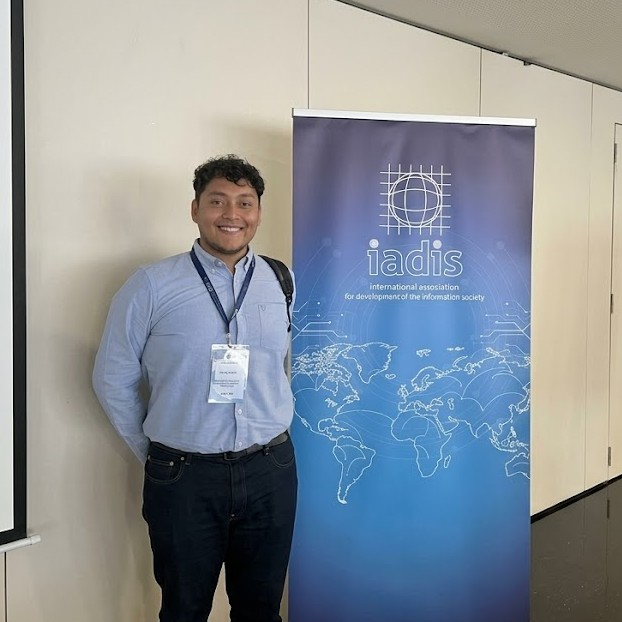
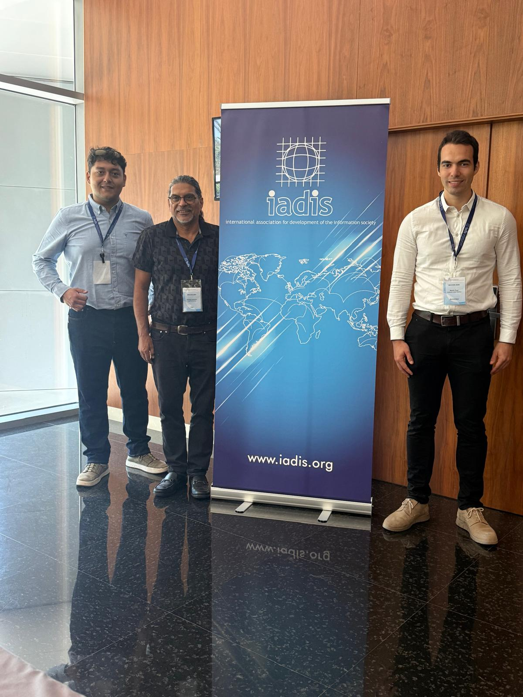
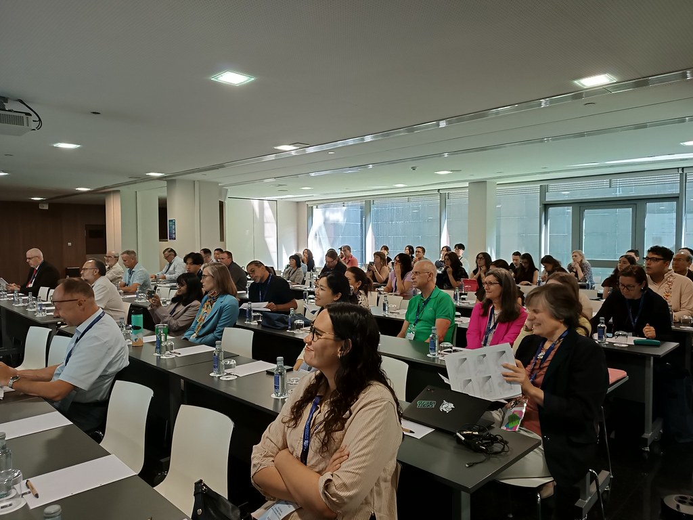
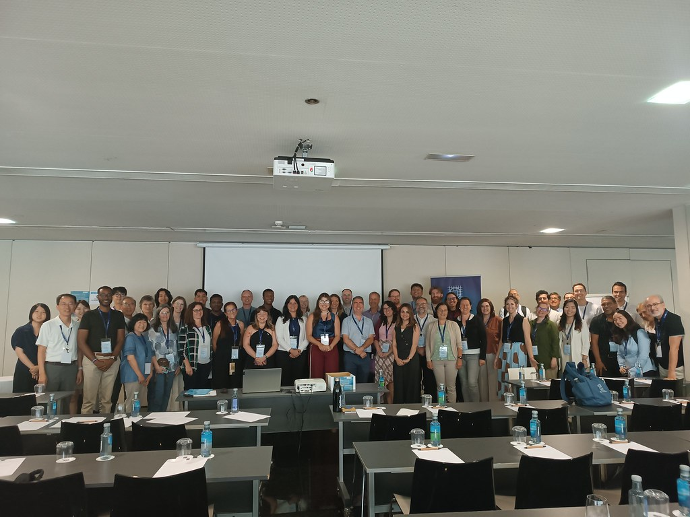
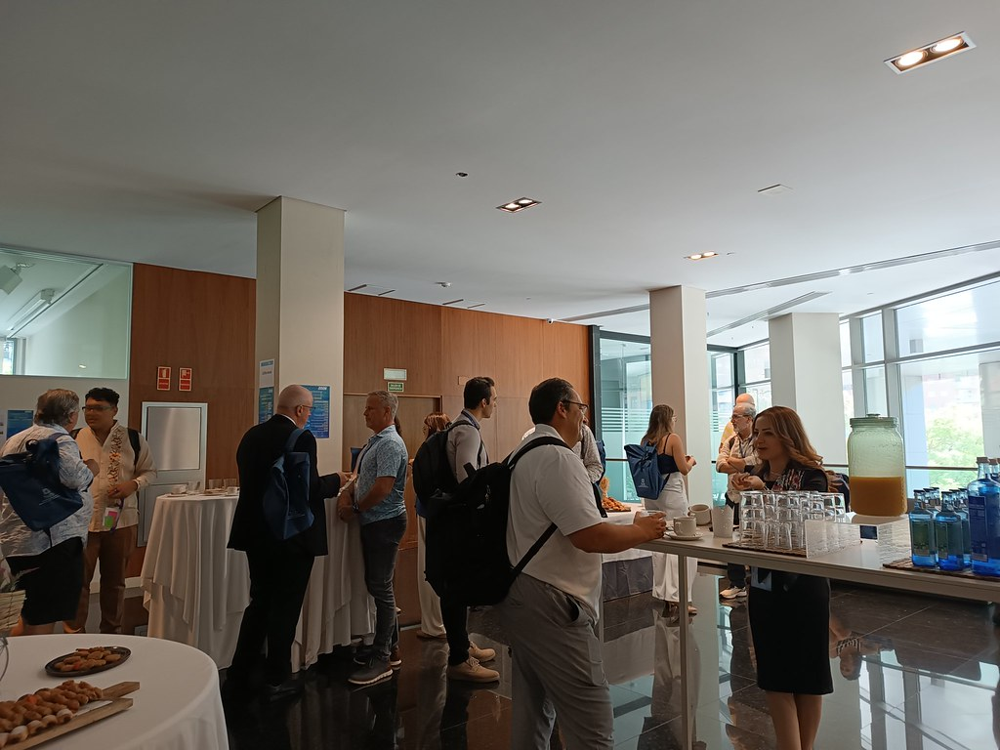

📄 Sobre el artículo
El artículo presenta BOTAS, la versión del sistema que después evolucionó en LIMA: una interfaz de lenguaje natural diseñada con un enfoque de Inteligencia Artificial Centrada en el Humano que permite administrar sistemas GNU/Linux mediante instrucciones en español, con soporte para múltiples distribuciones.
Este trabajo forma parte de mi tesis de licenciatura. Lo presenté de forma presencial en Valencia gracias al apoyo de las autoridades de la Universidad Tecnológica de la Mixteca.
📸 La conferencia
Asistí los tres días de la conferencia, presenté el artículo y conversé con investigadores de distintos países; varias de esas conversaciones influyeron en decisiones posteriores de la tesis.





🎥 Video de la presentación
Grabación de mi presentación de BOTAS en AIS 2026 (MCCSIS/IADIS), Valencia, España.
📜 Certificado de presentación
❝ Cómo citar
Aragon Toledo, J. R. and Ruiz Rodríguez, R. (2026). BOTAS: A Human-Centered Natural Language Interface for GNU/Linux System Management with Multi-Distribution Support. In Proceedings of the International Conferences on Artificial Intelligence in Society 2026, Digital Transformation and Innovation Management 2026 and Connected Smart Cities 2026, pp. 100–110. Valencia, Spain: IADIS Press. ISBN 978-989-8704-78-8.
Ver BibTeX
@inproceedings{AragonToledo2026BOTAS,
author = {Aragon Toledo, Jose Ramon and Ruiz Rodríguez, Ricardo},
title = {{BOTAS}: A Human-Centered Natural Language Interface for {GNU/Linux} System Management with Multi-Distribution Support},
booktitle = {Proceedings of the International Conferences on Artificial Intelligence in Society 2026, Digital Transformation and Innovation Management 2026 and Connected Smart Cities 2026},
pages = {100--110},
year = {2026},
publisher = {IADIS Press},
address = {Valencia, Spain},
isbn = {978-989-8704-78-8}
}